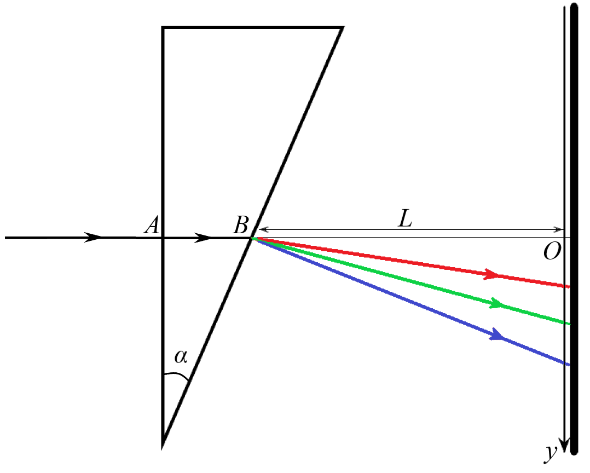
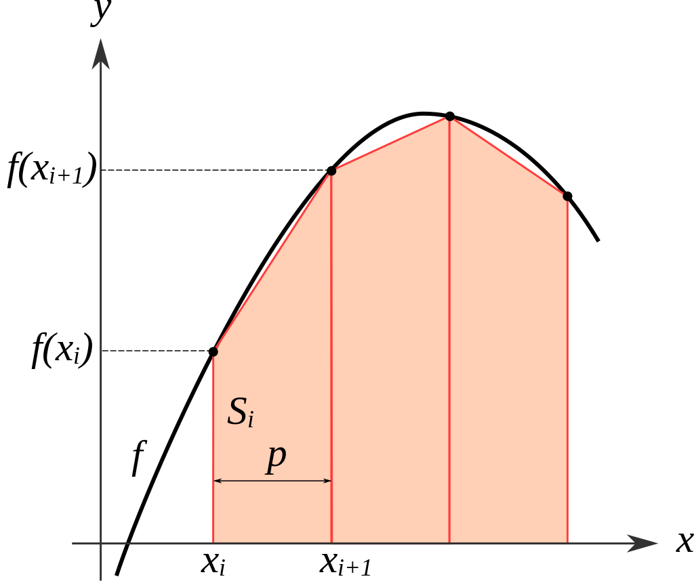

W23 (2023) — English translation
The refractive index of a material is a nonlinear quantity that depends on the wavelength of the incident radiation. This dependence can be a key property of the material in the manufacture of simple spectroscopic devices (for example, prisms). At the same time, the dependence of the refractive index on wavelength can be detrimental in other optical devices, in particular where precise focusing of rays is important. Recently, more and more new materials and substances have appeared, the optical properties of which need to be studied. In this problem we will try to determine the dependence of the refractive index of an unknown liquid on wavelength, using a liquid for which this dependence is already known. The measurement diagram is shown in the figure below. A thin beam from a source falls on an air prism with thin walls with an angle $\alpha=30^{\circ}$ at the apex, immersed in the liquid under study. The ray is incident on one of the faces of the prism perpendicularly at point $A$ and then exits the prism at point $B$. Because the refractive index depends on wavelength, the angles at which rays of different wavelengths exit the prism will differ. At a distance $L$ from point $B$ there is a screen perpendicular to $AO$. For the convenience of further work, we introduce the dimensionless quantity $x=\frac yL$. The screen contains many light-sensitive elements that measure the intensity $\mathcal J_x(x)$ (power incident on a unit surface area per unit time) at the points at which they are located.

An ordinary light source (such as a table lamp) is characterized by the fact that it emits light not of one wavelength (as a laser does), but of wavelengths in a certain range at once. To characterize its radiation, we introduce the concept of spectral density $\mathcal J_\lambda(\lambda)$. We define it so that the power emitted by the source in the wavelength range from $\lambda$ to $\lambda+\Delta\lambda$ is equal to $\mathcal J_\lambda(\lambda)\Delta\lambda$, where $\Delta\lambda$ is a small value. In this part of the problem we study the spectral density of the source. Let us first find out at which point $x$ on the screen the beam passing through the prism should hit, depending on the refractive index of the liquid. Applying Snell's law for rays, we obtain the following formula for the dependence of $x$ on $n$:\[x=\operatorname{tg}\alpha\frac{\sqrt{n^2-\sin^2\alpha}-\cos\alpha}{\sqrt{n^2-\sin^2\alpha}+\sin\alpha\operatorname{tg}\alpha}.\tag{1}\]In order to restore the value $n$ from the known value of $x$, formula (1) must be “inverted”. As a result of simple calculations, we obtain:\[n=\frac{\sqrt{1+x^2}}{1-x\operatorname{ctg}\alpha}.\tag{2}\]The refractive index of most transparent materials in the visible range can be approximately described by the formula:\[n(\lambda)=A+\frac B{\lambda^2},\tag{3}\]where $A$ and $B$ are some constants. First, measurements are carried out in a known liquid for which these constants are $A=1.14$ and $B=8.6\cdot10^4~нм^{2}$. The table in the answer sheet shows the intensity values $\mathcal J_x$ in arbitrary units at points with coordinate $x$.
To obtain a formula for the spectral density $\mathcal J_\lambda$, it is necessary to carry out more complex calculations. Here we limit ourselves to only the final formula for spectral density: \[\mathcal J_\lambda=\frac{2B\sqrt{1+x^2}}{\lambda^3}\frac{(1-x\operatorname{ctg}\alpha)^2}{x+\operatorname{ctg}\alpha}\mathcal J_x.\tag{4}\]
In the future, we will also need to calculate what fraction of the source power is emitted at wavelengths shorter than a certain value $\lambda$. Let us denote this quantity as $\sigma(\lambda)$. To find it, you need to calculate the area under the graph $\mathcal J_x$. We will do this using the trapezoid method. Let us know the values $f_i$ of the function $f(x)$ at points $x_i$. Then the area under the graph of this function can be estimated as the sum of the areas of the trapezoids constructed as shown in the figure below.

Since in our case the points $x_i$ are located at equal intervals, the formula for the final area $S_k$ under the graph between points $x_0$ and $x_k$ is: \[S_k\approx\left(\frac{f_0+f_k}2+\sum_{i=1}^{k-1}f_i\right)\Delta x,\tag{5}\] where $\Delta x=x_{i+1}-x_i$ is the distance between adjacent points.
Now we will replace the liquid in which the prism is immersed with an unknown liquid, the dependence of whose indicator on the wavelength we want to find. The experimental design remains the same. The table in the answer sheet shows the intensity values $\mathcal J_x$ in arbitrary units at points with coordinate $x$.
In the last part of the problem, we obtained the dependence $\sigma(\lambda)$, which will now allow us to reconstruct $n(\lambda)$ for the unknown liquid. However, the values of $\sigma$ obtained in the previous part are not the same as the values obtained here. To find out which values $\lambda$ correspond to those obtained in the previous paragraph $\sigma$, we will resort to the so-called. linear interpolation of dependence $\lambda(\sigma)$. The essence of linear interpolation is as follows. Let us know the values $\lambda_1$ and $\lambda_2$ of the function $\lambda(\sigma)$ at points $\sigma_1$ and $\sigma_2$, respectively. If these points are close enough to each other, then with good accuracy it is possible to approximate the function between these two points by a section of a straight line. This allows us to approximately reconstruct the function values for $\sigma_1 < \sigma < \sigma_2$. Let us derive the formula that determines $\lambda(\sigma)$. Since we approximate the function as linear, the desired dependence can be written in the form: \[\lambda=a\sigma+b.\tag{6}\]To find $a$ and $b$, we note that this line must pass through the points $(\sigma_1,\lambda_1)$ and $(\sigma_2,\lambda_2)$. Substituting them into equation (6), we obtain a system of equations:\[\begin{cases}\lambda_1=a\sigma_1+b,\\\lambda_2=a\sigma_2+b.\end{cases}\tag{7}\]Solving this system, we finally obtain:\[\lambda=\frac{\lambda_2-\lambda_1}{\sigma_2-\sigma_1}\sigma+\frac{\lambda_1\sigma_2-\lambda_2\sigma_1}{\sigma_2-\sigma_1}.\tag{8}\]
Source: https://pho.rs/p/2851